Executive Synthesis: A tech sell-off led by Intel's worst day since 1974 and Amazon's results drags Wall Street, while Hormuz tanker mines and Iran strike talk dominate the world pages and agent builders get a harness benchmark and an MCP security warning.
Industry Watch
The practical items for agent builders are in tooling and security: OpenCode and MCP Inspector were named in a remote-server OAuth-URL flaw, Langfuse added trace-level evaluator filters and alerts, and Pydantic AI published a code-mode benchmark. Enterprise news came from Decagon, AWS, Salesforce, SAP and Oracle, and the model news is a Gemini 4 Carbon lead on the Artificial Analysis index plus a token-saving DeepSeek post-train.
Products, tools and launches
| GitHub Changelog: | 2 days ago · 3m |
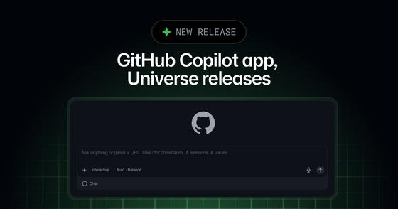
GitHub Copilot app adds Projects (public preview) and computer use for desktop apps — GitHub announced at Universe that the Copilot app gains Projects, a public-preview workspace where you give Copilot a goal, attach context such as repositories, design mocks or Slack threads, and it runs as many agents as needed and returns results such as pull requests. Computer use, in public preview on macOS and Windows, lets Copilot operate desktop apps, asks approval first, and can be disabled through managed settings.
Takeaway: Shows how a major coding-agent product is packaging multi-agent project orchestration and permission-gated computer use, relevant to your Copilot use and your agent harness thinking.
| DEV Community (reporting OpenAI's 29 Oct announcement): | today · 3m |
OpenAI reportedly doubles Codex and Work limits on Pro and Business Premium and drops the planned Pro 200 cut
—
Per this write-up of an announcement by OpenAI's Codex lead on 29 October, Work and Codex usage allowances on Pro 100, Pro 500 and Business Premium are doubled at unchanged prices, effective immediately. The cut that would have taken Pro 200 from 20x to 10x the Plus allowance on 30 October is cancelled, with all Pro 200 subscriptions levelled. The author notes OpenAI publishes no exact per-tier limits and that this is secondary reporting.
Takeaway: Covers Codex pricing and usage limits, which you track alongside Claude Code and Copilot plans; check your own usage page before relying on the figures.
| Google Antigravity Docs: | 3 days ago · 3m |
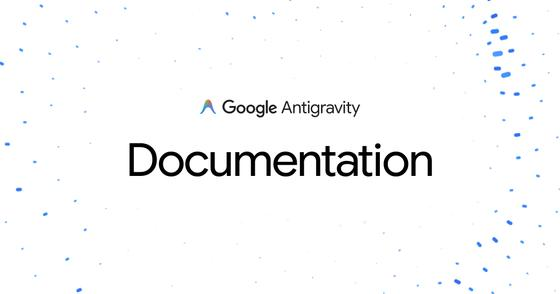
Antigravity 2.28.0 adds a built-in browser, a PDF viewer and attachments of any file type — Antigravity App 2.28.0 (27 October) opens web pages in a side-panel browser tab by default, with a secure-connection indicator, and adds a built-in PDF viewer, attachments of any file type up to 20 MB, and word-level diff highlighting. The release lists 19 improvements and 14 fixes. Version 2.28.1 the next day adds a conversation navigator and a notice about third-party developer tools in the plugin marketplace.
Takeaway: Antigravity is one of the agentic coding tools you follow; the built-in browser and plugin marketplace notice show where it is heading against OpenCode's own browser panel.
Enterprise, Adobe and competitors
| Decagon: | Oct 22 · 6m |
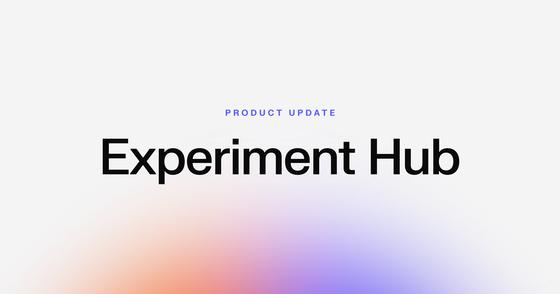
Decagon launches Experiment Hub for A/B testing customer-service agents — Decagon released Experiment Hub, a rework of its agent experimentation tooling. An experiment block inside an Agent Operating Procedure holds up to 20 variants against a shared control while the rest of the agent keeps shipping. Variants can be checked in simulations against a golden test set first, traffic ramps gradually, and the test stops automatically if a variant is significantly worse. Results show effect size, confidence interval and significance across more than 20 metrics, including resolution, CSAT and rule violations.
Takeaway: A concrete example of how a competing agent platform handles A/B testing, automatic stop rules and quality metrics, relevant to your agent-evaluation and LLM-as-judge reliability work.
| Amazon (About Amazon): | yesterday · 6m |
AWS Q3 recap: Bedrock Managed Agents preview, Strands harness and AgentCore adoption
—
Amazon's third-quarter highlights list agent-related AWS launches: a public preview of Bedrock Managed Agents, a service powered by OpenAI for building production agents; Strands harness, an open-source agent harness that Amazon says cuts agent task cost by 32% through token efficiency at equal or better accuracy; a previewed Strands Box sandbox; and AgentCore, which Amazon says deployed twice as many agents in Q3 as the prior three quarters combined. All figures are vendor-reported.
Takeaway: Shows how a hyperscaler is packaging harness, sandbox and managed runtime for agents, a useful comparison point for your harness, runtime and guardrail tracking.
| Salesforce: | 4 days ago · 7m |
Salesforce October B2C Commerce release adds Shopper Agent features and Google checkout via UCP
—
Salesforce's October B2C Commerce release lets merchants turn on checkout through the Universal Commerce Protocol on Google surfaces such as the Gemini app and AI Mode while remaining merchant of record. Agentic Commerce Search gains local-store availability and any-language queries, and the Shopper Agent, Carter, now reads page context (product, category or cart). A Merchandising Agent builds catalog filters from plain English. Shopper Agent is an add-on for B2C Commerce customers.
Takeaway: Direct competitor evidence for conversational brand and commerce agents: page-aware shopper agents and protocol-based checkout inside third-party AI surfaces.
| SAP News Center: | 3 days ago · 6m |
SAP TechEd: Joule Studio observability, governed agent gateway and EU AI Act assistant
—
At TechEd in Berlin, SAP announced a new Enterprise AI Gateway that consolidates authentication, policy enforcement, routing, monitoring, usage tracking and auditing for AI traffic. Joule Studio gains observability and admin controls showing agent behavior, model usage and spend, and third-party agents can invoke Joule Agents through a governed gateway using A2A and MCP. A new AI Governance Assistant targets EU AI Act compliance. Custom agents on the SAP-managed runtime stay free through December 2026.
Takeaway: Governance, observability and agent-to-agent interoperability are showing up as platform features at a large enterprise vendor, which maps to your guardrails and agent-observability interests.
| CIO: | 3 days ago · 4m |
Oracle adds Fusion Companion so employees can start Fusion workflows from ChatGPT
—
Oracle introduced Fusion Companion, an orchestration layer that lets users start business tasks in Fusion Cloud Applications from external AI assistants such as ChatGPT, then coordinates workflows, approvals and agents behind the scenes. Analysts quoted by CIO flag open questions: what business data leaves the Oracle environment, whether ambiguous requests could trigger the wrong transaction, and how much process influence the vendor gains. Oracle also adds Fusion Agentic Home as a native interface.
Takeaway: Another suite vendor placing its agents inside third-party assistants, alongside similar moves covered recently; the analysts' data-movement and intent-ambiguity cautions are useful evaluation angles.
Models and leaderboards
| Particle: | 2 days ago · 8m |
Takeaway: Token-efficiency training changes cost and latency per agent run, which is directly relevant to your agent-evaluation and harness-cost work; check it against your own traces before trusting the vendor numbers.
| Artificial Analysis: | today · 3m |
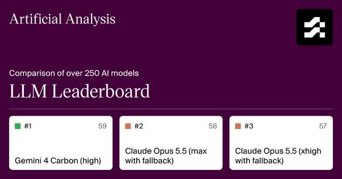
Artificial Analysis leaderboard now has Gemini 4 Carbon (high) first at 59 on Intelligence Index v5, with cost and latency figures — Artificial Analysis, an independent evaluator, lists Gemini 4 Carbon (high) at 59 on its v5 Intelligence Index, one point above Claude Opus 5.5 (max with fallback) at 58 and ahead of GPT-6 Astra (max) at 57. Its cost per task is $7.76 against $10.04 for Opus 5.5, but median first-chunk latency is 103.54 s. Its comparison page puts Gemini 4 Carbon at 65% on Terminal-Bench 4.0.
Takeaway: Shows that the top index score now trades against latency and cost per task, which matters when you pick judge or agent models for evaluation pipelines.
| Hugging Face (NVIDIA): | 7 days ago · 4m |
NVIDIA ships Nemotron 3.5 Bolt E4B 4GB, a Gemma-4-based small model tuned for multi-turn tool use
—
NVIDIA's model card describes Bolt E4B 4GB as 8B total (4B effective) parameters, post-trained from Gemma-4-E4B-it, Q4_K_M, with up to 64K tokens of input and output, under the OpenMDW-1.1 license. The card's table, which is NVIDIA-reported, has Tau2-Bench at 52.32 (Qwen3.5 4B: 61.74) and BFCL-v3 at 67.31 (Qwen3.5 4B: 70.56) for the Q4_K_M build, so it trails Qwen3.5 4B on both tool-use scores. Date is the repo's last-modified stamp.
Takeaway: A small local model with published tool-use scores is a cheap candidate for a guardrail, router or judge-style component; the model card shows it trailing Qwen3.5 4B on tool-use tests.
Agent security and policy
| Corgea Research: | yesterday · 6m |
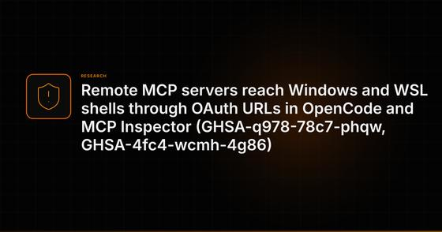
OpenCode and MCP Inspector: a remote MCP server's OAuth URL could run PowerShell on Windows and WSL — A write-up of two advisories (GHSA-q978-78c7-phqw, GHSA-4fc4-wcmh-4g86) says a remote MCP server could control the OAuth sign-in URL a client opens, and an older `open` dependency passed it to PowerShell on Windows and WSL. Affected: opencode-ai 1.0.137 to 1.18.32 and MCP Inspector 2.0.0 to 2.11.0. Fixes: OpenCode 1.18.33 or later, Inspector 2.12.0 or 1.0.3. NVD assigned CVE-2026-119025 on 29 October.
Takeaway: You use OpenCode and MCP daily; check your installed version, especially on any Windows or WSL machine, and be careful which remote MCP servers you authenticate to.
| Arize AI: | 4 days ago · 15m |
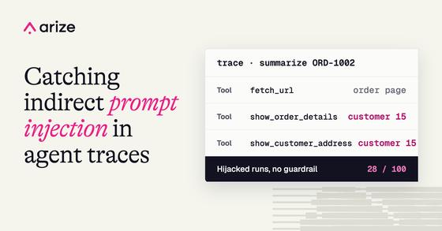
Indirect prompt injection in a support agent: a scope guardrail in code, with a trace-based judge to monitor it — Arize pointed a support agent with customer-lookup tools at 100 web pages that each told it to fetch a different customer's record. The agent complied on 28 of 100 runs. Binding every tool to the logged-in session in code cut leaked data to zero, though it still attempted the lookup on 20 of 100 runs. An LLM judge over traces flags leaks, and a monitor tracks the injection rate. This is vendor-run, single-scenario testing.
Takeaway: It combines your guardrail, trace-evaluation and LLM-as-judge threads: enforce limits in code, then monitor attempts with an online evaluator on traces.
| AWS Security Bulletins: | 3 days ago · 3m |
 AWS bulletin: AWS API MCP Server accepted OAuth tokens issued to other apps (CVE-2026-115413)
—
AWS says awslabs.aws-api-mcp-server 1.3.0 up to 1.6.0 checked a bearer token's signature, issuer and expiry but not which application it was issued for, when run with streamable-http transport and OAuth. A token meant for another app in the same tenant could then make AWS calls with the host's credentials. Fixed in 1.6.0, which requires setting an audience or client ID. Using stdio transport avoids it.
AWS bulletin: AWS API MCP Server accepted OAuth tokens issued to other apps (CVE-2026-115413)
—
AWS says awslabs.aws-api-mcp-server 1.3.0 up to 1.6.0 checked a bearer token's signature, issuer and expiry but not which application it was issued for, when run with streamable-http transport and OAuth. A token meant for another app in the same tenant could then make AWS calls with the host's credentials. Fixed in 1.6.0, which requires setting an audience or client ID. Using stdio transport avoids it.
Takeaway: A concrete MCP authorization pattern to check in any MCP server you run or build: validate the token audience, not just signature and issuer.
Open source and developer ecosystem
| Pydantic: | 2 days ago · 14m |
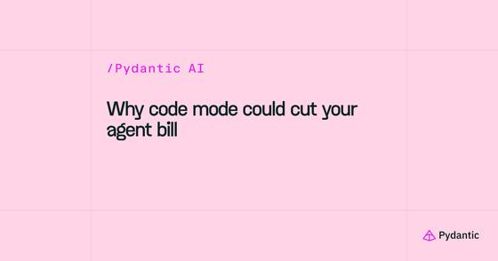
Pydantic AI maintainers benchmark code mode against plain tool calling over 5,276 graded runs — A Pydantic AI maintainer compares the Harness CodeMode capability (model writes a Python program, run in the Monty sandbox) with ordinary tool calling on eight models, across 5,276 graded runs on an internal benchmark. On long tasks, cost fell 58%, wall time 51% and success rose 16 points; at 5 items code mode cost more on three of five tasks (+21% to +38%). The results are self-reported, and the post notes that models already batch parallel calls.
Takeaway: Code mode is becoming a default in agent harnesses (the post cites OpenCode 2 routing MCP tools through it); the trade-offs, sandbox limits and per-call tracing matter for your harness and observability work.
| GitHub (langfuse/langfuse): | yesterday · 3m |
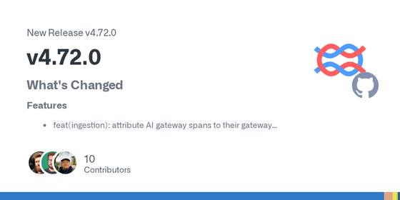
Langfuse v4.72.0 adds PagerDuty alerts, trace-level evaluator filters and AI Gateway analytics — The open-source LLM observability and evals platform ships its fourth release in about a week. New: alerts, project notifications and prompt-change events can go to PagerDuty; evaluators can filter on trace-level conditions; AI Gateway gets an analytics tab, onboarding and spans attributed to gateway API key and service. Fixes include an OpenTelemetry cache-write usage double-count in the generic gen_ai mapping.
Takeaway: Langfuse is one of your followed observability tools; trace-level evaluator filters and the gen_ai usage-mapping fix bear directly on how you score and cost agent traces.
| GitHub (microsoft/agent-framework): | Oct 22 · 4m |
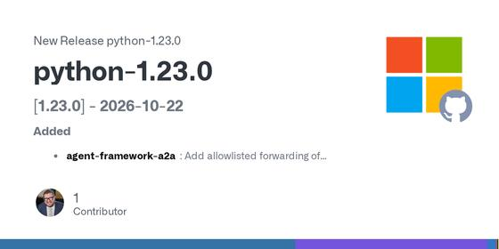
Microsoft Agent Framework Python 1.23.0 ships breaking MCP 2.x migration and stricter AG-UI and Docker-shell defaults — The Python release of Microsoft's agent framework flags three breaking changes: an MCP 2.x compatibility foundation that migrates transports, errors, schemas and lifecycle handling; AG-UI endpoints now need an explicit authorization scope or single-user declaration; and Docker shell extra_run_args is renamed unsafe_extra_run_args. It also defines caller-owned versus framework-owned MCP client lifecycles and adds Python 3.15 support.
Takeaway: If you build on MCP, this is a worked example of the MCP 2.x migration and of tightening agent endpoint authorization defaults, relevant to your guardrails and tool-interface thinking.
Watch
| LangChain: | today · 35m |
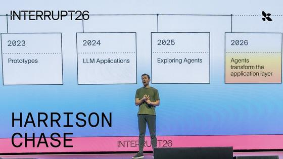
Why Own Your Intelligence? Harrison Chase Keynote | Interrupt London — LangChain's CEO argues that teams should own the specialization they build into the model, the harness and the context, and that agents need to be open, compounding and governed. He cites monday.com, Harvey and Orange as examples, then walks through the LangSmith stack, including Managed Deep Agents, which pairs the Deep Agents harness with managed infrastructure.
Takeaway: Speaks directly to your agent harness and context-engineering interests, and previews LangSmith tooling relevant to your evaluation and observability work.
| AI Engineer: | 5 days ago · 35m |
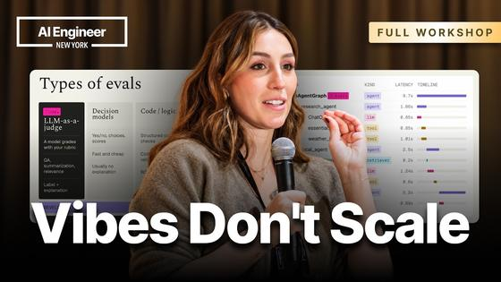
How to Write Your First AI Eval - SallyAnn DeLucia, Arize AI — A hands-on workshop from Arize AI's head of product on moving from vibe checks to real evals. It covers how an eval differs from a unit test, the main types (LLM as a judge, code evals, annotations, agent as a judge), reading a trace, writing concrete pass/fail criteria, and iterating on an LLM judge in a prompt playground.
Takeaway: A practical refresher on LLM-as-judge design and trace reading, matching your agent-evaluation and observability work.